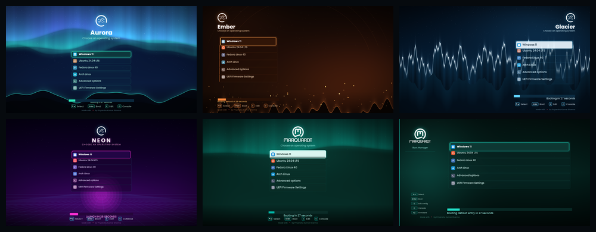
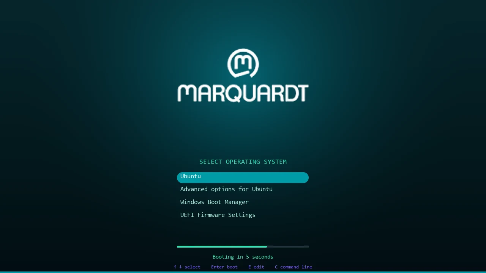
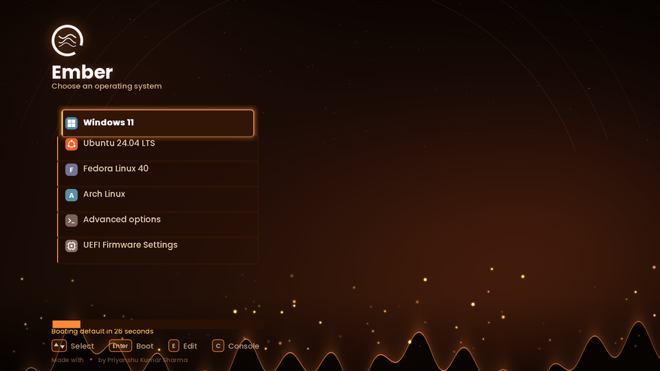
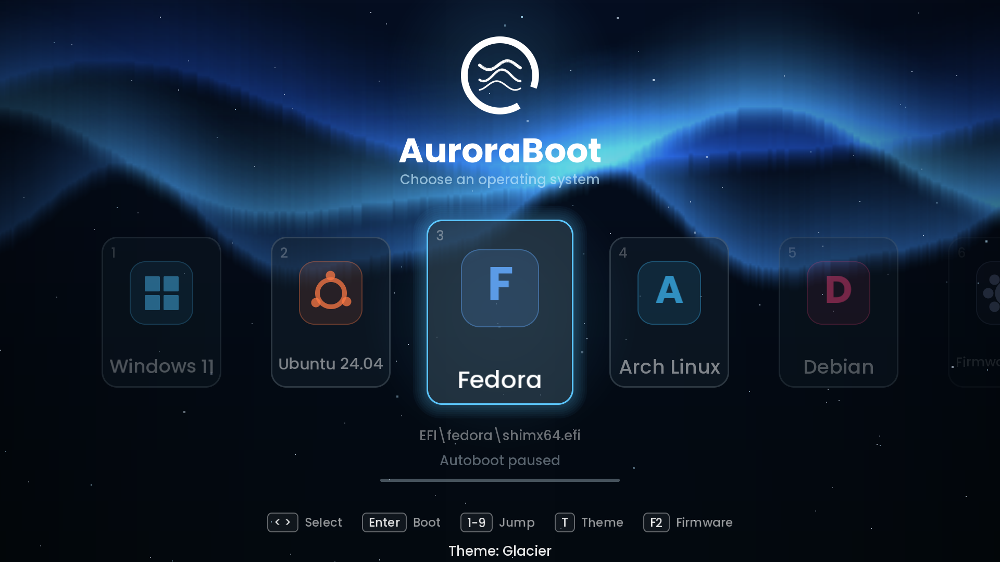
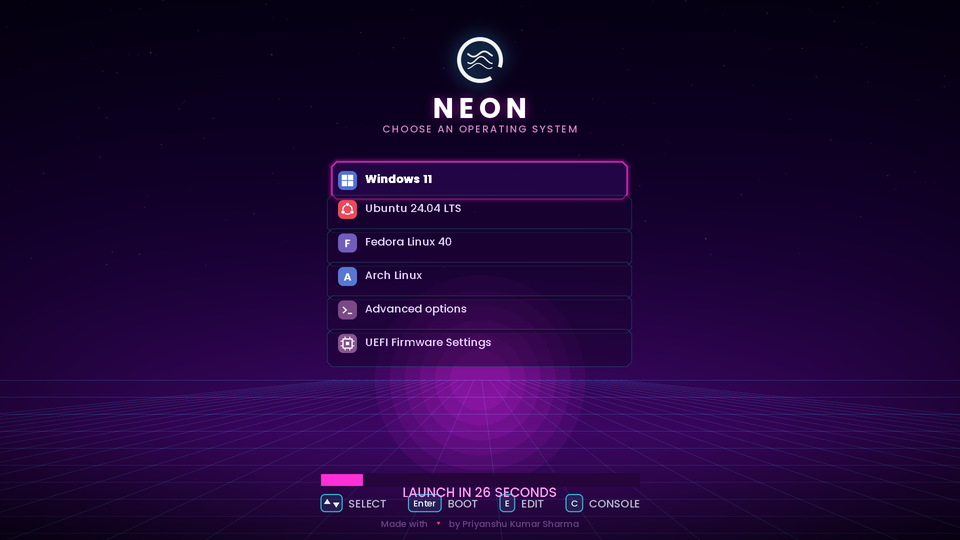

A minimal dark bootloader theme with 6 color palettes.
One command to install. Works on Ubuntu, Fedora, Debian and more.

Click a theme to see its colors. All themes share the same layout — only the palette changes.
🔒 Locked themes require an access key.

Original branded look — dark teal
#009aa6
#0b3a41
Cool sky — teal + purple
#2de3b5
#7c5cff

Warm fire — orange + red
#ff8a3d
#e0245e

Ice cold — sky blue + deep blue
#5cc8ff
#2a6bff

Synthwave — pink + cyan
#ff3da5
#22e5ff
Branded dark teal — exclusive
#009aa6
#0b4f5c
Pick your theme below, then follow the steps. Takes under a minute.
Step 0 — Select a theme to install:
Open a terminal and run:
git clone https://github.com/itspriyanshuks17/grub-boot-loader.git
cd grub-boot-loader
chmod +x install.sh
You will be shown a numbered menu to pick your theme. Locked themes require an access key.
sudo ./install.sh
Available themes:
1) aurora
2) ember
3) glacier
4) classic [access key required]
5) mq [access key required]
6) neon
Select a theme [1-6]: _
The installer runs update-grub automatically. Just reboot to see your new theme.
sudo reboot
Run the installer again — it overwrites the current theme.
sudo ./install.shRemoves theme files and cleans /etc/default/grub.
sudo ./install.sh --uninstallIf you prefer to do it yourself without the script.
sudo cp -r themes/aurora/ /boot/grub/themes/aurora
# Add to /etc/default/grub:
GRUB_THEME="/boot/grub/themes/aurora/theme.txt"
GRUB_GFXMODE=1920x1080,auto
# Apply:
sudo update-grub
# Fedora/RHEL:
sudo grub2-mkconfig -o /boot/grub2/grub.cfgReplace aurora with any theme name from the themes/ folder.
Any Linux distro that uses GRUB2 — Ubuntu, Debian, Fedora, Arch, openSUSE, Mint, Pop!_OS and more. The installer auto-detects update-grub vs grub2-mkconfig.
No. This only themes GRUB's menu. It does not touch Windows Boot Manager, the EFI partition entries, or any bootloader other than GRUB.
GRUB themes work independently of Secure Boot — they are just image and config files loaded by GRUB, not EFI executables. Secure Boot should not be affected.
Make sure GRUB_TERMINAL_OUTPUT=console is not active in /etc/default/grub — it overrides graphical mode. The installer comments it out automatically. Also verify GRUB_GFXMODE is set.
On BLS (Boot Loader Specification) systems, set GRUB_ENABLE_BLSCFG=false in /etc/default/grub before running grub2-mkconfig. Only do this if you understand your setup.
Press C at the GRUB menu to open the command line, then:
loadfont (hd0,1)/boot/grub/fonts/unicode.pf2 set theme=(hd0,1)/boot/grub/themes/aurora/theme.txt export theme
The Classic and MQ themes are exclusive. Contact the author to request an access key.